LOOKBOOK & CATALOG
画册版式与品牌延展
视觉应用示例
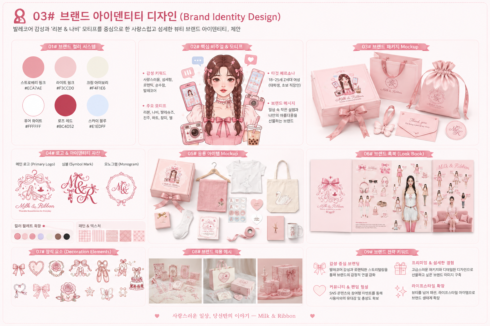
品牌画册系统

35
把 AI、设计和代码
组织成可运行的产品流程
通过 AI 聊天完成日记、记账与日程规划的生活管理产品
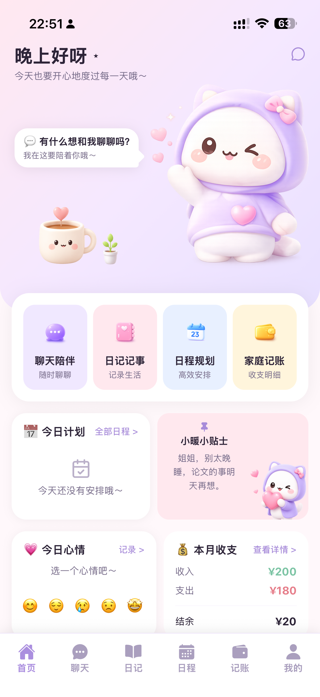
市面上的生活管理工具功能齐全，但独居和单身用户仍然"懒得用"——不是缺功能，是缺动机。
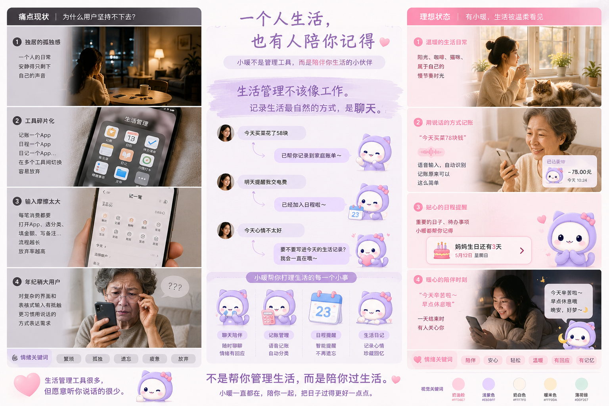
传统工具把生活拆成碎片，小暖把它还原成一条连续的河流——聊天是入口，识别是引擎，归档是结果。
用户说"今天买奶茶花了 18"时，不是为了记账，是为了分享。记账只是顺便。把输入动作藏在对话里，摩擦降为零。
同样一笔消费，开心时和焦虑时含义完全不同。脱离情绪的记账只是数字堆砌，结合情绪的消费才有理解价值。
不是"每天打开日记本写"，而是聊天和消费自动沉淀成可回看的个人历史。记录在发生，不需要刻意去做。
提醒不应该像闹钟。它应该像家里人在旁边说一句"该吃饭了"。不是 push，是 gentle nudge——有人在意你的日程。
传统 App 把聊天、日记、日程、记账拆成四个独立工具，需要用户分别打开、分别填写。小暖把它们串成一个闭环：用户只需要说话，剩下的由 AI 自动分流和处理。同一个对话可以同时产生消费记录、日程提醒和心情日记。
不是"不会记录"，而是"不想被工具打断"——这才是小暖真正的用户。
"不是学不会记账 App，是每天打开填数字太烦了。如果跟谁说句话就能记好、到时间自动提醒，那才叫真的有用。"
早上喝咖啡花了 28，中午跟朋友约饭 AA 转账，晚上想起后天要交电费——没有人帮忙记，没有人提醒。
50-85 岁，手机用得惯但怕复杂。拒绝"记账"，愿意"聊今天花了什么"。对表格式输入天然抵触。
把输入藏进对话里：用户不需要知道"我在记账"。聊天时随口说出来，系统后台自动提取和分类——零学习成本。
让提醒变成"有人在意"：独居用户的孤独感往往在没人提醒的日常里。小暖的提醒不是 push，是"我在帮你记着"。
降低认知负担：年纪稍大用户不习惯功能菜单和层级导航。用自然语言交互取代界面操作，说一句就完成。
一个会聊天的生活管家 / 陪伴式记录助手。面向独居、单身男女与年纪稍大的用户——
不需要学记账 App，不需要填表，只要像跟朋友说话一样自然聊天。
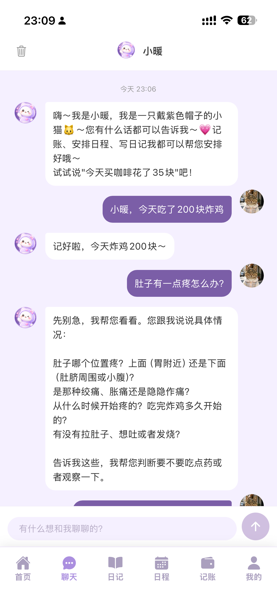
三个原则贯穿小暖的每一个功能决策，构成了与其他 AI 助手的根本差异。
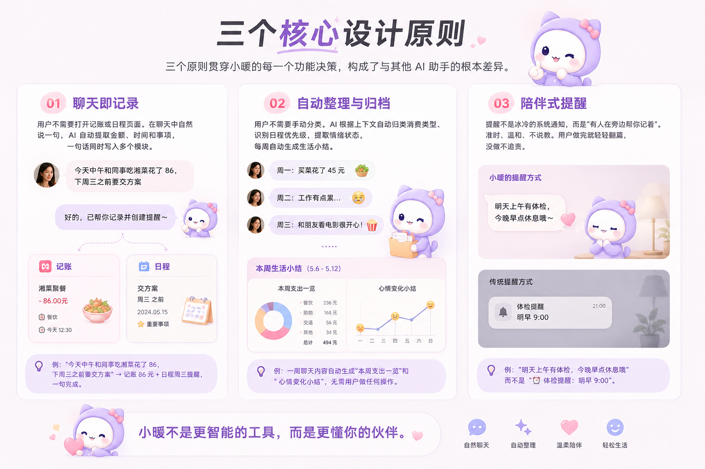
以聊天为核心入口，以首页为聚合中枢——五大功能模块深度关联，数据在三层页面间自动流转。
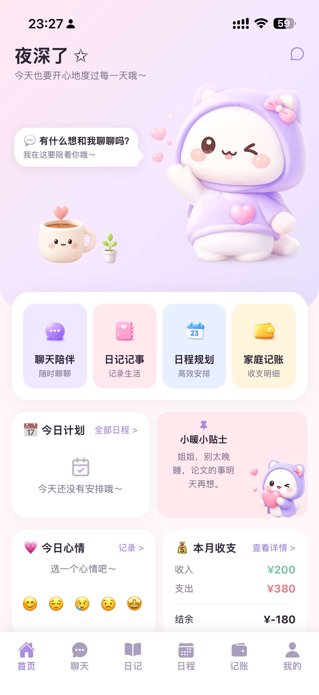
一屏聚合所有核心功能入口，展示小暖形象、今日计划、心情记录、收支概览。
小暖形象、今日计划、心情记录、收支概览四大模块整合在同一屏，用户无需跳转即可掌握当日全貌。
小暖角色作为页面视觉中心，头像、问候语、贴士卡片共同建立"有人在乎你"的陪伴感知。
记账、记心情等高频操作通过首页快捷入口和底部导航栏双重路径触达，最多 2 步完成。
薰衣草紫主色搭配柔和圆角与温暖插画风格，降低工具感，营造安心、柔软的使用氛围。
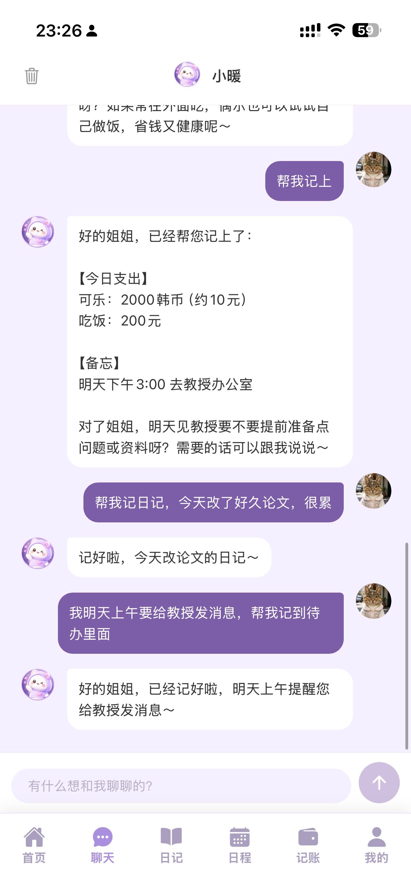
聊天是小暖所有功能的唯一入口——用户不需要知道"我在记账"或"我在写日记"，只需要像跟朋友说话一样自然表达。
用户在日常对话中说出消费金额、时间安排、情绪状态或待办事项，形式完全自由，不需要使用指令格式或关键词。
实时识别对话中的四类信息：金额与类别（记账）、时间与事项（日程）、情绪关键词（日记）、承诺与截止（待办），自动提取结构化字段。
一句话可能同时触发多个模块。"中午吃了湘菜 86，下周三交方案" → 记账 86 元餐饮 + 日程周三提醒，用户无感完成两项记录。
同一句话可以同时写入记账、日程、日记三个模块——用户不需要区分"我现在在记账"还是"我在聊天"。零认知负担，零学习成本。
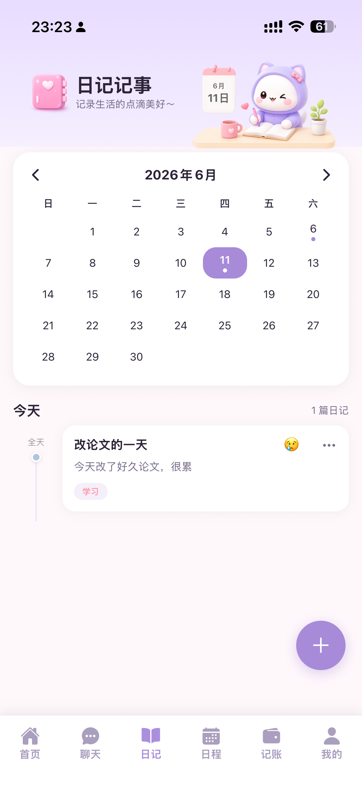
日记不是"写"出来的，是"发生"出来的——小暖从每日聊天中提取事件和情绪，自动生成可编辑的日记草稿。
用户在日常聊天中分享今天做了什么、心情如何、遇到什么事。不需要说"写日记"，只需自然表达——"今天跑完步感觉整个人活过来了"。
提取对话中的事件描述、情绪关键词和时间线，匹配当天的消费记录和日程条目，自动生成结构化日记草稿——时间轴 + 事件摘要 + 心情标签。
打开日记页，已经写好的草稿等着确认——可以原样保存、补充细节、添加图片，或删掉重写。写日记从"每天找时间写"变成"看一眼确认就好"。
日记不是"记录今天做了什么"，而是"让今天被在意地记住了"。自动生成降低启动阻力，可编辑保留用户掌控感——写日记从负担变成确认。
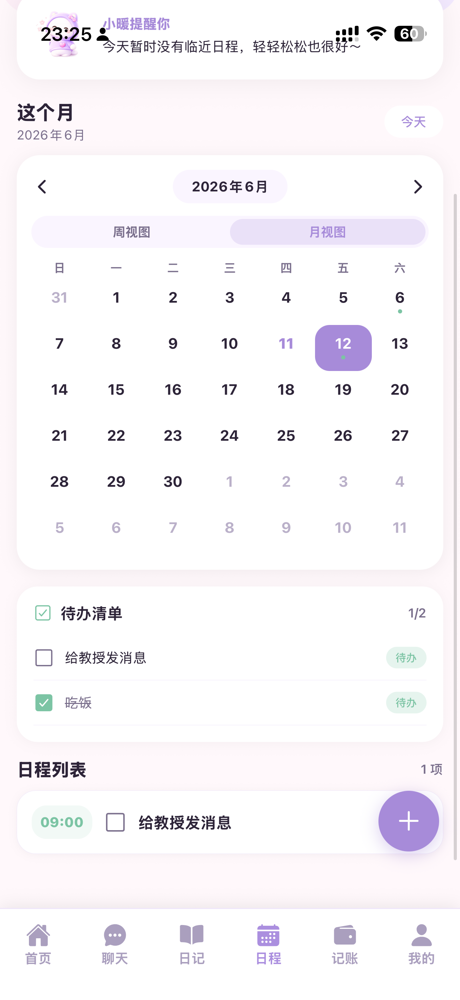
日程不应该需要"录入"——用户随口说的时间承诺就是日程，小暖负责把它变成准确的时间轴和温和的提醒。
用户说"下周三之前要交方案""明天下午两点约了牙医""周末想去看展"。形式随意，时间可以是精确点也可以是模糊范围。
从对话中提取日期/时间、事项描述、紧急程度、关联条件（"之前""之后""左右"）。模糊时间自动解析："下周"= 周一，"下周三之前"= 周二提醒。
日程页展示自动生成的时间线，用户可调整提醒时间或补充备注。到期时小暖温和提醒，用户做完轻轻翻篇，没做不追责。
"下周"自动解析为周一，"下周三之前"自动设为周二提醒——模糊时间表达转为精确日程，用户不用算日期和星期几。
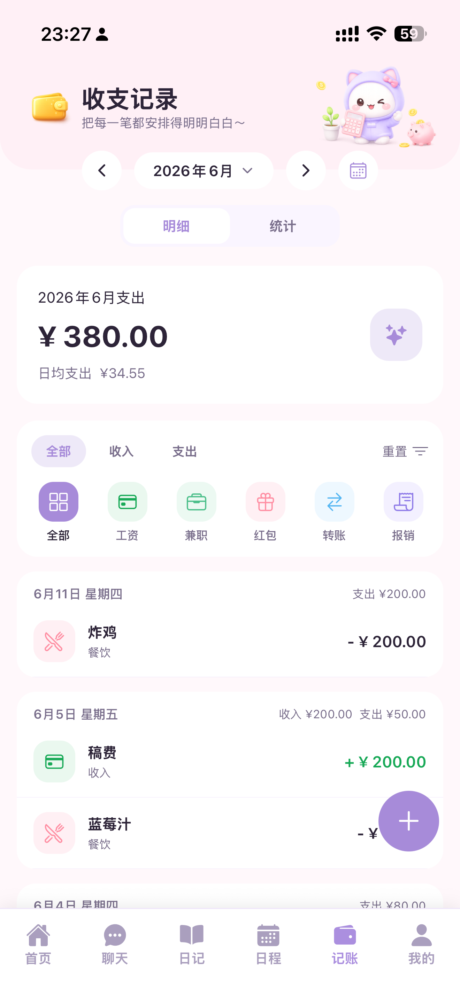
记账的最大阻力是打开 App、选分类、填金额——小暖把它变成一句话的事，你只管说花了什么。
用户说"今天中午吃了湘菜 86""刚充了 200 话费""奶茶 18"。可以是完整句子也可以是碎片信息，随时说随时记，不需要选分类。
提取金额、消费类别（餐饮/购物/交通/娱乐等）、时间、备注，自动入账归类。连续多条消费自动合并，同一天消费生成日汇总与超支提醒。
记账页展示当日/本周/本月收支，按类别可视化。用户看到的不是冷冰冰的数字表，而是"本月餐饮比上月少了 200"这样的生活洞察。
你只管说花了什么，剩下的交给小暖。不记错（AI 校验金额和类别）、不重复（同一条对话不重复入账）、不漏项（识别到消费意图即使没说金额也会追问确认）。
三个迭代循环，每次发现一个真问题、做出一个明确决策、产生一个可验证的结果——没有"持续优化"这种空话。
问题现象：AI 把"奶茶 18"记成"购物"而非"餐饮"，把"打车 35"记成"交通"但混入了"滴滴月卡充值"。
用户反馈："我说奶茶，它给我记成购物，我还得手动改，那跟普通记账 App 有什么区别？"
修改方案：在 System Prompt 中增加三级分类关键词映射表（奶茶→餐饮→饮品），识别到模糊类别时追加确认而非直接入账。
设计结果：分类准确率从约 65% 提升至约 92%。模糊消费场景（团购、转账）改为追问"这算餐饮还是购物？"。
问题现象：用户说"下周三之前要交方案，这周末得加班赶一下"，AI 只提取了"下周三交方案"，漏掉了"周末加班"这条隐含日程。
用户反馈："我以为它帮我记了周末要加班，结果只有周三的提醒，还得我自己再设一个。"
修改方案：在识别逻辑中增加"因果链解析"——当一句话中出现"所以/得/需要/那就要"等因果连接词时，将后续内容也作为独立待办提取。
设计结果：因果链中的隐含待办不再遗漏。用户确认后分条入日程，避免一个提醒里塞了多项任务。
问题现象：新用户打开 App 后不知道该干嘛——首页聚合了四个模块，但没有一个明确的"开始"动作。
用户反馈："我知道它能记账、能写日记，但我第一句话该说什么？我是不是要先设置什么东西？"
修改方案：新用户首次进入时，小暖主动发送三条引导消息并提供可点击示例（"今天花了什么""今天心情怎么样""帮我记个提醒"），降低第一句话的心理门槛。
设计结果：首次会话启动率明显提升。用户看到示例后直接点击或照着说，不再停留在首页不知所措。
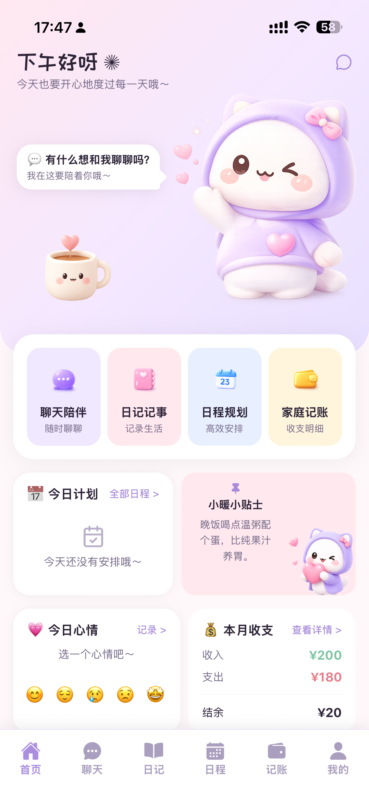
小暖不是被动等待用户提问的工具，而是会根据时间、用户状态和行为历史，主动给出恰当的关怀提醒——不打扰、不频繁、恰到好处。
根据时间段和用户作息模式触发。深夜检测到用户仍在活跃 → 发送休息提醒。早上首次打开 → 问候 + 今天天气和日程预览。午饭后 → 提醒可以小睡片刻。
基于用户近期的消费、日记、日程数据判断状态。连续三天日记出现负面情绪词 → 轻轻问一句。本周消费大幅超过往周均值 → 温和提醒但不评判。
基于用户操作行为判断。用户连续多天未打开日记功能 → 某天聊天中主动提一句"最近要不要写一篇？"。用户刚设完一周日程 → 顺势提醒"这周排得很满，记得留点休息时间"。
设计原则：每天最多推送 1-2 条，不超过 3 条。用户可关闭。不追责、不催促、不制造焦虑。
让每个人都有一个真正了解自己的 AI 生活伙伴
从剧本输入到分镜、视觉资产、API 调用与视频生成的内容生产流程
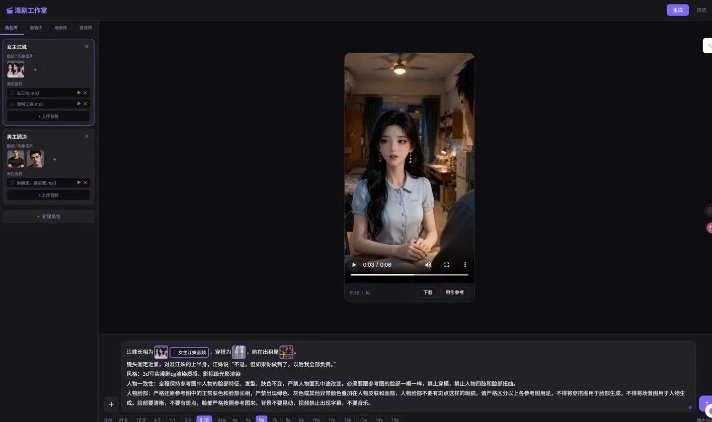
同一个人物在不同镜头中容易变脸、换发型、服装细节漂移，短视频一旦连续播放就会立刻出戏。
AI 单次生成很容易只追求"好看的一帧"，但漫剧需要空间关系、镜头角度和情绪节奏连续。
如果每个镜头都靠临时试错，素材越多越混乱，返工会吞掉大部分时间和 API 成本。
这一阶段我用 ChatGPT Image 2 先生成角色图片和场景图片，再把这些图作为后续视频生成的视觉锚点。
不是单张好看的概念图，而是为连续叙事服务的资产系统：角色要能跨镜头保持辨识度，场景要能反复调用，提示词要能沉淀成可复用模板。
固定五官、服装、年龄感和气质，作为后续镜头的统一参考。
为室内、街道、夜景等空间建立稳定的视觉锚点。
把角色、场景、镜头语言整理成可复用 Prompt，减少试错成本。
将图像资产输入 Image-to-Video 流程，提升画面连续性。
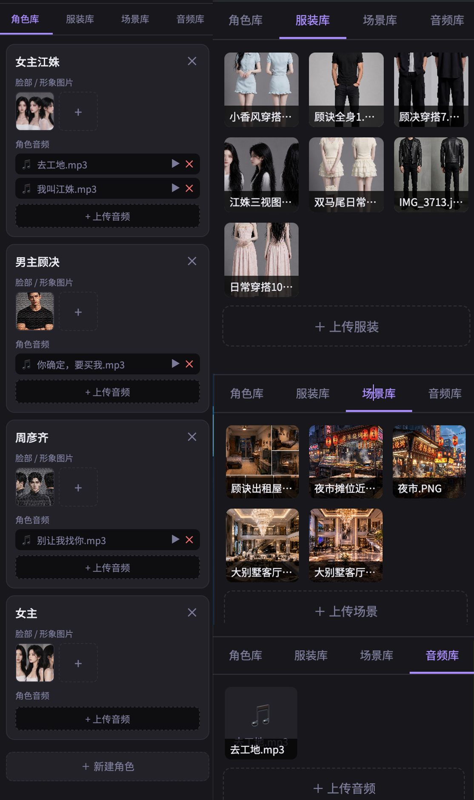
角色库把人物从"提示词里的一句话"变成可管理的生产资产。每个角色都保留头像、服装、声音、性格标签与镜头使用记录，后续生成时不再从零描述。
这一页展示的是我把剧本文本转成镜头单元的脚本流程：先识别剧情动作，再拆分镜头时长，最后输出可直接进入视频生成 API 的结构化分镜。
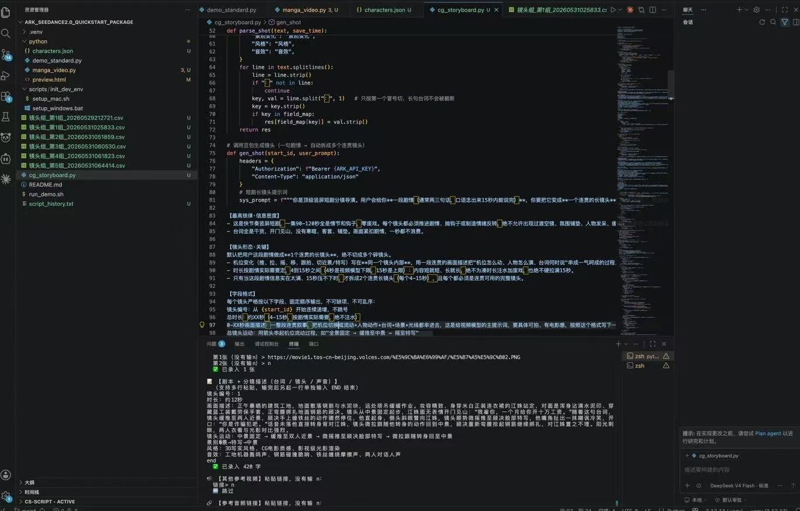
不只是在用 AI 生成视频，而是搭建了一个完整的生产工具。这个工具是接入 Seedance API 开发的，使用 Claude Code 辅助开发。
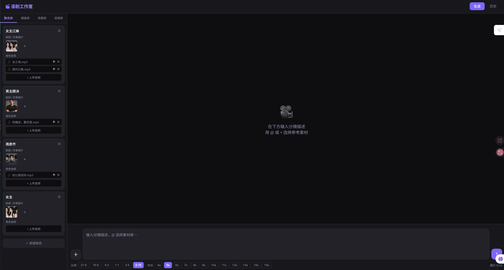
我把漫剧生产拆成"可控资产 + 自动分镜 + 批量生成 + 人工复核"的流程。重点不是一次性生成炫技画面，而是让每一集都能稳定复用角色、场景和镜头规则，形成真正可以连续产出的短剧流水线。
Python 脚本读取剧本，按情节拆分为独立镜头单元，标记角色和场景。
根据镜头需求，从角色库和场景库自动匹配对应的参考图。
拼接角色描述、场景、景别、动作和情绪，形成可调用的 API 指令。
传入参考图和提示词，批量生成 4-15 秒视频片段。
筛选可用镜头，统一字幕、节奏和音效，输出完整漫剧片段。
这里的 Prompt 不是临时写一句描述，而是把故事理解、角色资产、场景资产和镜头语言编码成稳定参数。它决定了 AI 生成是否能从"随机好看"进入"可导演、可复盘、可批量生产"。
最终输出的是竖屏 AI 漫剧镜头：偏短剧化、强情绪、强人物识别，画面风格介于网文插画和动态漫画之间。重点是让角色在连续镜头中保持统一，同时用景别和动作制造"下一秒想看"的节奏。
即使使用参考图，不同镜头角度仍会出现面部偏差。解决：增加面部特征的提示词约束。
每个镜头独立生成导致动作不连贯。解决：设计镜头间的过渡逻辑。
题材选择影响观众留存，算力成本需要和内容价值匹配。
AI 漫剧制作系统不是一个"生成视频的工具"，
而是一个从零搭建的生产系统。
从角色一致性的 Image-to-Video 方案，到 Python 自动化分镜拆解，再到 Seedance API 的批量调用与重试机制，每个环节都经过反复踩坑和迭代。最终交付的不是单条视频，而是一套可复用、可扩展的漫剧生产流水线。
Cloudflare Deployment / Interactive Room / Cat Animation
一个把个人作品、学习路径、AI 实验与互动入口整合在一起的线上空间。通过房间式导航、猫咪动画和 Cloudflare 部署，把作品集做成可访问、可探索的个人数字入口。
静态截图无法展现交互效果
建议直接访问网站体验完整版
以 Milk & Ribbon 为核心案例，展示品牌定位、视觉识别与物料系统设计
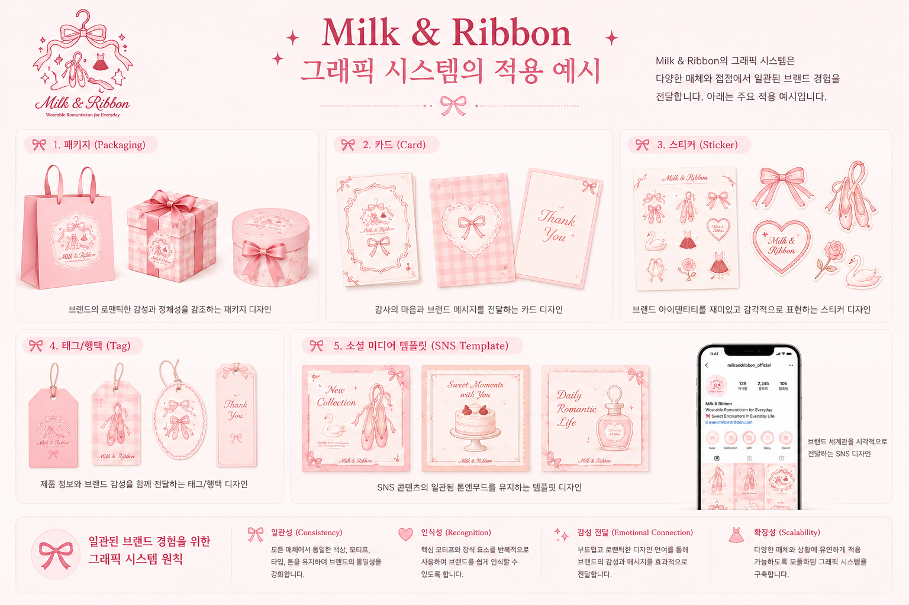
在"去性别化"和"极简冷淡风"之后，18-25 岁 Z 世代女性正发生审美反弹，"极致女性化"的 Coquette、Balletcore 在社交媒体上爆红。
然而市面上的甜美品牌缺乏品牌叙事和精神内核，购买体验断层。Milk & Ribbon 要做的是将"柔软"和"秩序"融合，打造有精神内核的可穿着浪漫主义。
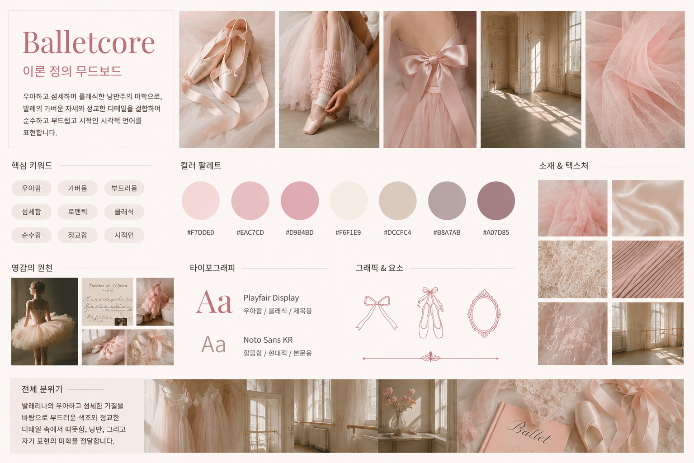
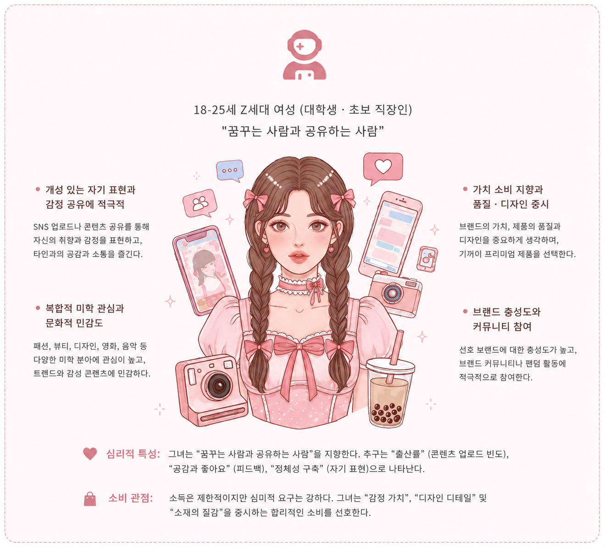
目标人群：18-25 岁 Z 世代年轻女性，追求"出片率"的造梦者与分享者。
价值主张：少女感不是年龄的生理特征，而是一种拒绝沉闷、保留诗意的精神状态。
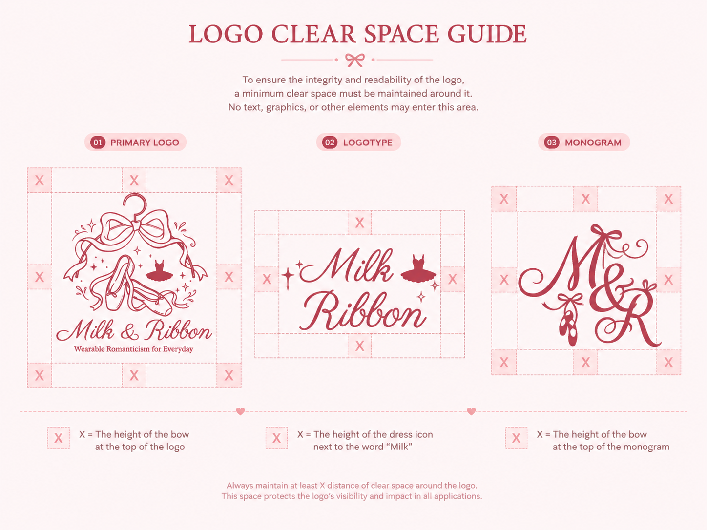
用柔粉、奶油白、玫瑰红和粉蓝建立甜美但不廉价的色彩层级；辅助图形延续丝带、芭蕾、天鹅和手写体线条，让品牌在包装、社媒和实体物料上保持统一识别。
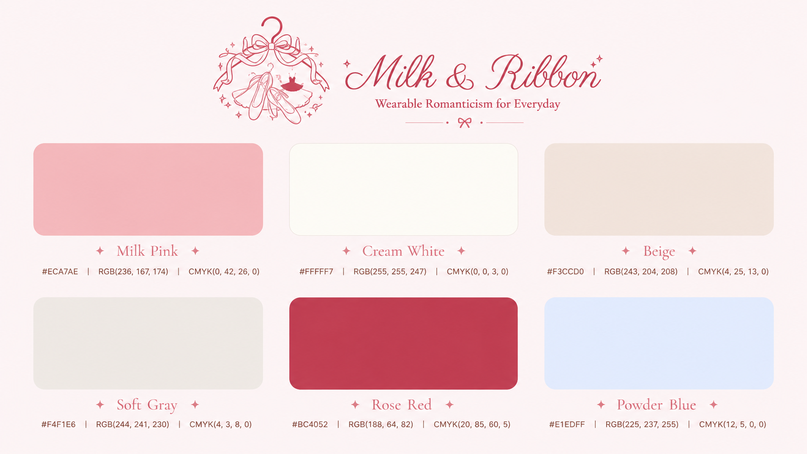
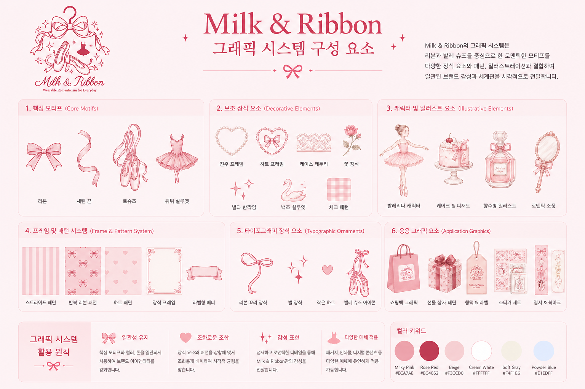

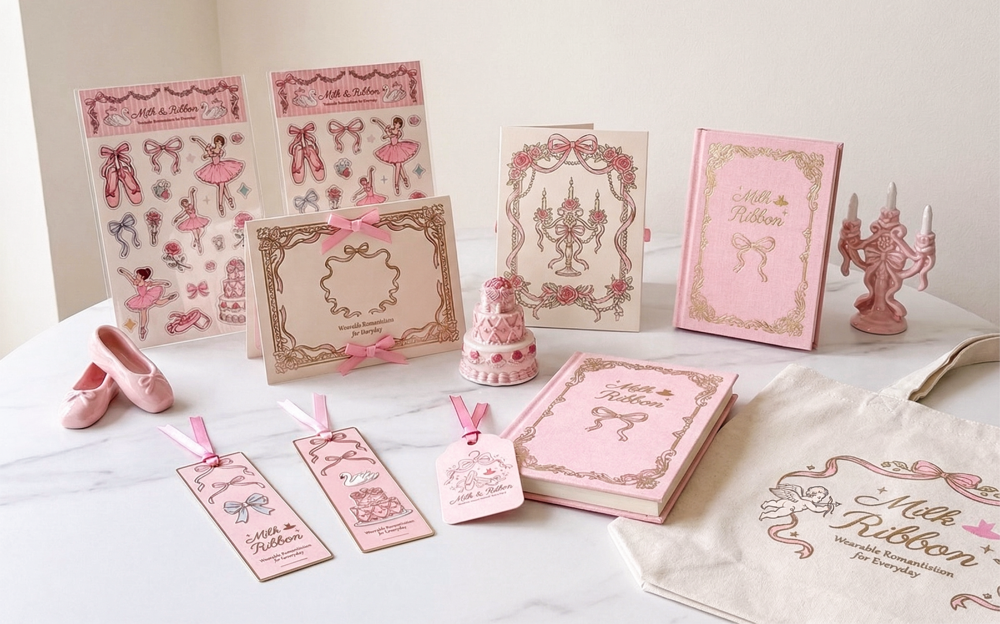
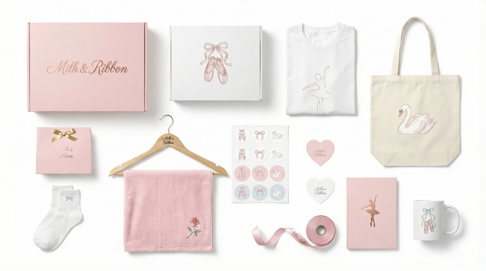
围绕品牌传播、电商转化与社媒投放制作的短片、主图视频和动态视觉素材。
适合官网首屏、品牌介绍、平台主图与横版投放位，重点控制信息层级、产品露出和视觉节奏。
面向小红书、抖音、Reels 等移动端场景，强调快速进入主题、字幕可读性和连续观看节奏。